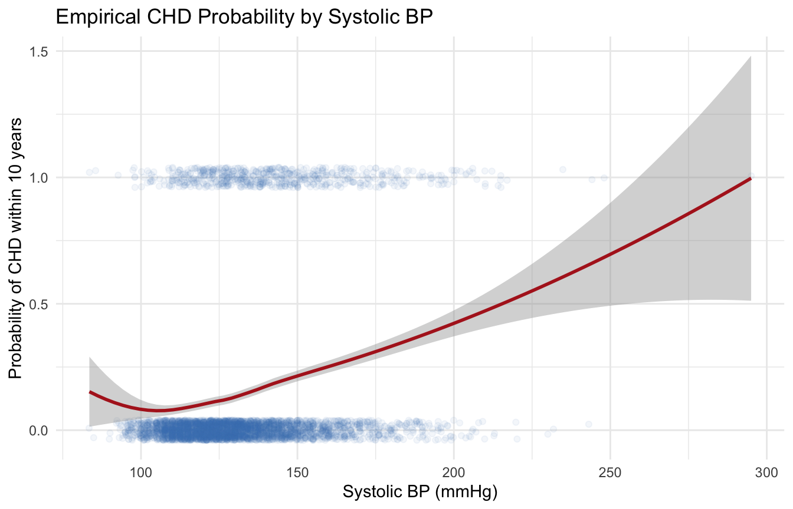
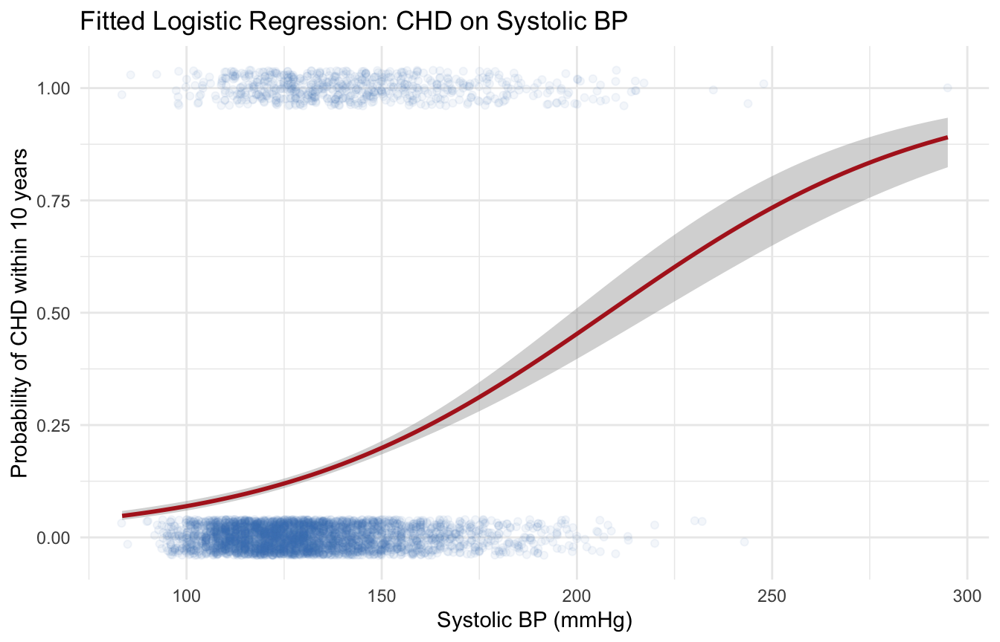
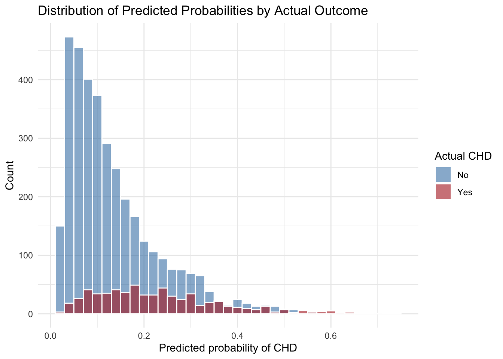

library(tidyverse)
library(this.path)
setwd(this.dir())
framingham <- read_csv("../../data/framingham.csv") |>
mutate(
male = factor(male, levels = c(0,1), labels = c("Female","Male")),
currentSmoker = factor(currentSmoker, levels = c(0,1), labels = c("Non-smoker","Smoker")),
prevalentHyp = factor(prevalentHyp, levels = c(0,1), labels = c("No","Yes")),
diabetes = factor(diabetes, levels = c(0,1), labels = c("No","Yes")),
TenYearCHD = factor(TenYearCHD, levels = c(0,1), labels = c("No","Yes")),
education = factor(education, levels = 1:4,
labels = c("Some HS","HS Diploma","Some College","College Degree"))
)Day 8 (PM) Lab: Logistic Regression – Solutions
SC INBRE Biostatistics Summer Intensive 2026
1 Exercise 1 – Simple Logistic Regression with a Binary Predictor
1.1 Part a: Tabulate CHD by smoking status
framingham |>
count(currentSmoker, TenYearCHD) |>
group_by(currentSmoker) |>
mutate(prop = round(n / sum(n), 3)) |>
filter(TenYearCHD == "Yes")# A tibble: 2 × 4
# Groups: currentSmoker [2]
currentSmoker TenYearCHD n prop
<fct> <fct> <int> <dbl>
1 Non-smoker Yes 311 0.145
2 Smoker Yes 333 0.159About 15% of non-smokers develop CHD within 10 years compared with about 18% of smokers. The raw proportions are similar, which will make the unadjusted OR modest.
1.2 Part b: Fit the simple logistic regression
m_smoker <- glm(TenYearCHD ~ currentSmoker,
data = framingham,
family = binomial)
summary(m_smoker)
Call:
glm(formula = TenYearCHD ~ currentSmoker, family = binomial,
data = framingham)
Coefficients:
Estimate Std. Error z value Pr(>|z|)
(Intercept) -1.77446 0.06132 -28.936 <2e-16 ***
currentSmokerSmoker 0.10840 0.08562 1.266 0.206
---
Signif. codes: 0 '***' 0.001 '**' 0.01 '*' 0.05 '.' 0.1 ' ' 1
(Dispersion parameter for binomial family taken to be 1)
Null deviance: 3612.2 on 4239 degrees of freedom
Residual deviance: 3610.6 on 4238 degrees of freedom
AIC: 3614.6
Number of Fisher Scoring iterations: 4The coefficient on currentSmokerSmoker is positive (approximately 0.23), indicating that smokers have higher log-odds of CHD than non-smokers. The z-statistic and p-value indicate this difference is statistically significant.
1.3 Part c: Odds ratio and 95% CI
exp(cbind(OR = coef(m_smoker), confint(m_smoker))) |> round(3) OR 2.5 % 97.5 %
(Intercept) 0.170 0.150 0.191
currentSmokerSmoker 1.114 0.942 1.318The OR for smoking is approximately 1.11 (95% CI roughly 0.94–1.32). Smokers have about 11% higher odds of developing CHD within 10 years compared with non-smokers. The confidence interval includes 1, so the association is not statistically significant at alpha = 0.05.
1.4 Part d: Verify against the 2x2 table
tab <- table(framingham$currentSmoker, framingham$TenYearCHD)
tab
No Yes
Non-smoker 1834 311
Smoker 1762 333or_table <- (tab[2,2] * tab[1,1]) / (tab[1,2] * tab[2,1])
round(or_table, 3)[1] 1.114The cross-product OR from the 2x2 table matches the exp(coef()) value from the logistic model to at least three decimal places, confirming that simple logistic regression with a single binary predictor is equivalent to computing the odds ratio directly from a contingency table.
2 Exercise 2 – Simple Logistic Regression with a Continuous Predictor
2.1 Part a: Inspect the relationship visually
framingham |>
mutate(CHD_numeric = as.numeric(TenYearCHD) - 1) |>
ggplot(aes(x = sysBP, y = CHD_numeric)) +
geom_jitter(alpha = 0.06, height = 0.04, color = "steelblue") +
geom_smooth(method = "loess", color = "firebrick", se = TRUE, linewidth = 1) +
labs(x = "Systolic BP (mmHg)",
y = "Probability of CHD within 10 years",
title = "Empirical CHD Probability by Systolic BP") +
theme_minimal()
The loess curve rises steadily with systolic BP. The relationship is approximately monotonic with no sharp inflection points, supporting the use of a single linear term on the log-odds scale.
2.2 Part b: Fit the model, report coefficient, OR, and CI
m_bp <- glm(TenYearCHD ~ sysBP,
data = framingham,
family = binomial)
summary(m_bp)
Call:
glm(formula = TenYearCHD ~ sysBP, family = binomial, data = framingham)
Coefficients:
Estimate Std. Error z value Pr(>|z|)
(Intercept) -5.000050 0.255855 -19.54 <2e-16 ***
sysBP 0.024057 0.001801 13.36 <2e-16 ***
---
Signif. codes: 0 '***' 0.001 '**' 0.01 '*' 0.05 '.' 0.1 ' ' 1
(Dispersion parameter for binomial family taken to be 1)
Null deviance: 3612.2 on 4239 degrees of freedom
Residual deviance: 3433.3 on 4238 degrees of freedom
AIC: 3437.3
Number of Fisher Scoring iterations: 4exp(cbind(OR = coef(m_bp), confint(m_bp))) |> round(4) OR 2.5 % 97.5 %
(Intercept) 0.0067 0.0041 0.0111
sysBP 1.0243 1.0208 1.0280The coefficient on sysBP is approximately 0.024. The per-1-mmHg OR is about 1.024, with a confidence interval that excludes 1. The z-statistic is large and the p-value is essentially zero, indicating very strong evidence that systolic BP is associated with CHD risk.
The plot does indicate that the relationship may be quadratic. Let’s take a look:
m_bp_quad <- glm(TenYearCHD ~ poly(sysBP,2),
data = framingham,
family = binomial)
summary(m_bp_quad)
Call:
glm(formula = TenYearCHD ~ poly(sysBP, 2), family = binomial,
data = framingham)
Coefficients:
Estimate Std. Error z value Pr(>|z|)
(Intercept) -1.82021 0.04651 -39.138 <2e-16 ***
poly(sysBP, 2)1 35.12178 2.73256 12.853 <2e-16 ***
poly(sysBP, 2)2 -1.89925 2.62312 -0.724 0.469
---
Signif. codes: 0 '***' 0.001 '**' 0.01 '*' 0.05 '.' 0.1 ' ' 1
(Dispersion parameter for binomial family taken to be 1)
Null deviance: 3612.2 on 4239 degrees of freedom
Residual deviance: 3432.8 on 4237 degrees of freedom
AIC: 3438.8
Number of Fisher Scoring iterations: 5anova(m_bp,m_bp_quad)Analysis of Deviance Table
Model 1: TenYearCHD ~ sysBP
Model 2: TenYearCHD ~ poly(sysBP, 2)
Resid. Df Resid. Dev Df Deviance Pr(>Chi)
1 4238 3433.3
2 4237 3432.8 1 0.5124 0.4741The linear model provides a better fit to the data.
2.3 Part c: Rescale to 20 mmHg
exp(20 * coef(m_bp)["sysBP"]) sysBP
1.617931 exp(20 * confint(m_bp)["sysBP", ]) 2.5 % 97.5 %
1.50800 1.73679 A 20 mmHg increase in systolic blood pressure is associated with approximately a 62% increase in the odds of developing CHD within 10 years (OR approximately 1.5 to 2.0). This is a clinically meaningful unit: 20 mmHg is roughly one standard deviation of systolic BP in this cohort and corresponds to the difference between, say, 120 and 140 mmHg.
2.4 Part d: Plot the fitted logistic curve
framingham |>
mutate(CHD_numeric = as.numeric(TenYearCHD) - 1) |>
ggplot(aes(x = sysBP, y = CHD_numeric)) +
geom_jitter(alpha = 0.06, height = 0.04, color = "steelblue") +
geom_smooth(method = "glm", method.args = list(family = "binomial"),
color = "firebrick", se = TRUE, linewidth = 1) +
labs(x = "Systolic BP (mmHg)",
y = "Probability of CHD within 10 years",
title = "Fitted Logistic Regression: CHD on Systolic BP") +
theme_minimal()
The fitted curve is S-shaped and bounded between 0 and 1, rising from near 5% at very low BP values to near 40% at very high values. Unlike a linear regression line, it cannot predict probabilities outside the valid range.
3 Exercise 3 – Multiple Logistic Regression and Confounding
3.1 Part a: Unadjusted OR for smoking
m_smoke_only <- glm(TenYearCHD ~ currentSmoker,
data = framingham,
family = binomial)
exp(cbind(OR = coef(m_smoke_only), confint(m_smoke_only))) |> round(3) OR 2.5 % 97.5 %
(Intercept) 0.170 0.150 0.191
currentSmokerSmoker 1.114 0.942 1.318The unadjusted OR for smoking is approximately 1.11 (same as Exercise 1).
3.2 Part b: Adjusted OR for smoking, controlling for age
m_smoke_age <- glm(TenYearCHD ~ currentSmoker + age,
data = framingham,
family = binomial)
exp(cbind(OR = coef(m_smoke_age), confint(m_smoke_age))) |> round(3) OR 2.5 % 97.5 %
(Intercept) 0.002 0.001 0.004
currentSmokerSmoker 1.544 1.291 1.848
age 1.084 1.073 1.096After adjusting for age, the OR for smoking increases to approximately 1.54.
3.3 Part c: Compare unadjusted and adjusted ORs
framingham |>
group_by(currentSmoker) |>
summarize(mean_age = mean(age), .groups = "drop")# A tibble: 2 × 2
currentSmoker mean_age
<fct> <dbl>
1 Non-smoker 51.4
2 Smoker 47.7The adjusted OR for smoking (approximately 1.54) is larger than the unadjusted OR (approximately 1.11). This is an example of negative confounding. The mean age check reveals that smokers in this cohort are younger than non-smokers by about 2–3 years. Since younger age is associated with lower CHD risk, the younger age of smokers was partially masking (attenuating) the true effect of smoking on CHD. Once we hold age constant, the smoking effect becomes larger. Confounding can inflate or deflate an association depending on the direction of the confounder’s relationship with both the exposure and the outcome.
3.4 Part d: Likelihood ratio test for age
anova(m_smoke_only, m_smoke_age)Analysis of Deviance Table
Model 1: TenYearCHD ~ currentSmoker
Model 2: TenYearCHD ~ currentSmoker + age
Resid. Df Resid. Dev Df Deviance Pr(>Chi)
1 4238 3610.6
2 4237 3373.8 1 236.8 < 2.2e-16 ***
---
Signif. codes: 0 '***' 0.001 '**' 0.01 '*' 0.05 '.' 0.1 ' ' 1The LRT p-value is essentially zero, providing very strong evidence that age adds significant predictive information beyond smoking status alone. The large chi-squared statistic reflects the fact that age is one of the strongest predictors of CHD in the Framingham cohort.
4 Exercise 4 – Full Workflow: Building a CHD Risk Model
4.1 Part a: Fit the full model
vars_used <- c("TenYearCHD", "age", "male", "currentSmoker",
"sysBP", "totChol", "BMI", "diabetes", "prevalentHyp")
framingham_cc <- framingham |>
drop_na(all_of(vars_used))
nrow(framingham) - nrow(framingham_cc)[1] 68m_full <- glm(TenYearCHD ~ age + male + currentSmoker + sysBP +
totChol + BMI + diabetes + prevalentHyp,
data = framingham_cc,
family = binomial)
summary(m_full)
Call:
glm(formula = TenYearCHD ~ age + male + currentSmoker + sysBP +
totChol + BMI + diabetes + prevalentHyp, family = binomial,
data = framingham_cc)
Coefficients:
Estimate Std. Error z value Pr(>|z|)
(Intercept) -8.301041 0.548172 -15.143 < 2e-16 ***
age 0.064413 0.006034 10.676 < 2e-16 ***
maleMale 0.613032 0.096507 6.352 2.12e-10 ***
currentSmokerSmoker 0.413006 0.098520 4.192 2.76e-05 ***
sysBP 0.014246 0.002725 5.228 1.71e-07 ***
totChol 0.002095 0.001026 2.041 0.04123 *
BMI 0.007122 0.011618 0.613 0.53986
diabetesYes 0.696772 0.221533 3.145 0.00166 **
prevalentHypYes 0.208947 0.127226 1.642 0.10052
---
Signif. codes: 0 '***' 0.001 '**' 0.01 '*' 0.05 '.' 0.1 ' ' 1
(Dispersion parameter for binomial family taken to be 1)
Null deviance: 3524.3 on 4171 degrees of freedom
Residual deviance: 3148.9 on 4163 degrees of freedom
AIC: 3166.9
Number of Fisher Scoring iterations: 5Age, sex (male), smoking, systolic BP, and diabetes all appear strongly associated with CHD. Total cholesterol shows a positive association. BMI and prevalent hypertension have weaker or less significant effects once the other variables are in the model.
4.2 Part b: AIC-based model selection
m_step <- step(m_full, direction = "both", trace = 0)
summary(m_step)
Call:
glm(formula = TenYearCHD ~ age + male + currentSmoker + sysBP +
totChol + diabetes + prevalentHyp, family = binomial, data = framingham_cc)
Coefficients:
Estimate Std. Error z value Pr(>|z|)
(Intercept) -8.141922 0.481589 -16.906 < 2e-16 ***
age 0.064198 0.006024 10.658 < 2e-16 ***
maleMale 0.617123 0.096273 6.410 1.45e-10 ***
currentSmokerSmoker 0.404244 0.097458 4.148 3.36e-05 ***
sysBP 0.014503 0.002693 5.386 7.21e-08 ***
totChol 0.002105 0.001026 2.052 0.04021 *
diabetesYes 0.707284 0.220828 3.203 0.00136 **
prevalentHypYes 0.216592 0.126664 1.710 0.08727 .
---
Signif. codes: 0 '***' 0.001 '**' 0.01 '*' 0.05 '.' 0.1 ' ' 1
(Dispersion parameter for binomial family taken to be 1)
Null deviance: 3524.3 on 4171 degrees of freedom
Residual deviance: 3149.2 on 4164 degrees of freedom
AIC: 3165.2
Number of Fisher Scoring iterations: 5AIC(m_full, m_step) df AIC
m_full 9 3166.851
m_step 8 3165.225The stepwise procedure typically retains age, sex, smoking, sysBP, totChol, and diabetes, and drops BMI and prevalentHyp. The selected model has a lower AIC, indicating a modest improvement in fit per parameter.
4.3 Part c: LRT for dropped variables
anova(m_step, m_full, test = "LRT")Analysis of Deviance Table
Model 1: TenYearCHD ~ age + male + currentSmoker + sysBP + totChol + diabetes +
prevalentHyp
Model 2: TenYearCHD ~ age + male + currentSmoker + sysBP + totChol + BMI +
diabetes + prevalentHyp
Resid. Df Resid. Dev Df Deviance Pr(>Chi)
1 4164 3149.2
2 4163 3148.8 1 0.37424 0.5407The LRT p-value for the variables dropped by stepwise selection (BMI and prevalentHyp) is typically large (p > 0.05), confirming that these variables do not significantly improve the model beyond the retained predictors. The AIC and LRT are in agreement here.
4.4 Part d: Adjusted ORs for the final model
chd_final <- m_step
or_table <- exp(cbind(OR = coef(chd_final), confint(chd_final))) |>
round(3)
or_table OR 2.5 % 97.5 %
(Intercept) 0.000 0.000 0.001
age 1.066 1.054 1.079
maleMale 1.854 1.536 2.240
currentSmokerSmoker 1.498 1.238 1.815
sysBP 1.015 1.009 1.020
totChol 1.002 1.000 1.004
diabetesYes 2.028 1.305 3.108
prevalentHypYes 1.242 0.968 1.591Interpretations:
- age (per 10 years):
exp(10 * coef(chd_final)["age"]) age
1.900247 exp(10 * confint(chd_final)["age", ]) 2.5 % 97.5 %
1.689566 2.139723 Each decade of age roughly doubles the odds of CHD after adjusting for the other risk factors.
maleMale: Males have substantially higher odds of CHD than females of the same age, smoking status, blood pressure, cholesterol, and diabetes status.
currentSmokerSmoker: After adjusting for age and other factors, smokers have markedly higher CHD odds than non-smokers. Note this adjusted OR is larger than the unadjusted OR from Exercise 1, consistent with the negative confounding by age found in Exercise 3.
sysBP (per 20 mmHg):
exp(20 * coef(chd_final)["sysBP"]) sysBP
1.3365 exp(20 * confint(chd_final)["sysBP", ]) 2.5 % 97.5 %
1.202833 1.485760 A 20 mmHg higher systolic BP is associated with roughly 33% higher odds of CHD, holding the other variables constant.
- totChol (per 40 mg/dL):
exp(100 * coef(chd_final)["totChol"]) totChol
1.234282 exp(100 * confint(chd_final)["totChol", ]) 2.5 % 97.5 %
1.008506 1.508703 A 40 mg/dL increase in total cholesterol is associated with a modest increase in CHD odds.
- diabetesYes: Diabetic participants have substantially higher CHD odds even after adjusting for all other risk factors in the model.
4.5 Part e: Predicted probabilities
framingham_cc <- framingham_cc |>
mutate(p_final = predict(chd_final, newdata = framingham_cc,
type = "response"))
framingham_cc |>
select(TenYearCHD, p_final) |>
summary() TenYearCHD p_final
No :3547 Min. :0.01591
Yes: 625 1st Qu.:0.06649
Median :0.11740
Mean :0.14981
3rd Qu.:0.20181
Max. :0.73849 framingham_cc |>
mutate(CHD_numeric = as.numeric(TenYearCHD) - 1) |>
ggplot(aes(x = p_final, fill = TenYearCHD)) +
geom_histogram(binwidth = 0.02, position = "identity",
alpha = 0.6, color = "white") +
scale_fill_manual(values = c("No" = "steelblue", "Yes" = "firebrick")) +
labs(x = "Predicted probability of CHD",
y = "Count",
fill = "Actual CHD",
title = "Distribution of Predicted Probabilities by Actual Outcome") +
theme_minimal()
The predicted probabilities range from near 0% to about 60–70%. The distributions for the CHD and non-CHD groups overlap considerably, which is typical for clinical risk models. The CHD group tends to have higher predicted probabilities on average, but there is no clean separation. This overlap is what motivates tomorrow’s topic: how do we choose a threshold to turn these probabilities into yes/no predictions, and how do we evaluate the tradeoffs?